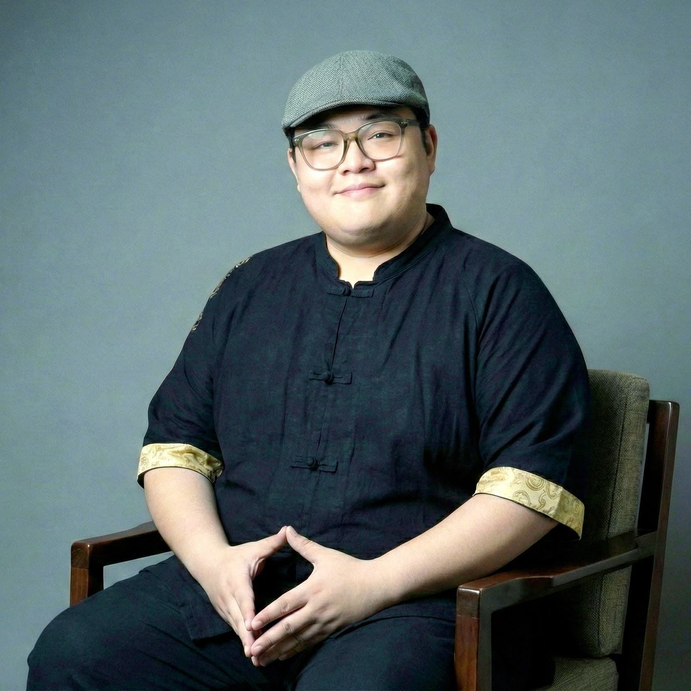

安猷 A&U · Metaphysics Solutions
提供高品质风水命理咨询服务 · 紫微斗数教育培训机构
先安其位，再谋其远。
安者，定也——定其位，安其心。猷者，谋也——观其势，再谋其远。二字合起来，正契合了 A&U 的读音。
命盘就像一份验身报告：它揭示你的先天优点或缺点、在哪些时间容易有什么状况、什么时机适合推进或退守。我们不做宿命论般的断言，只据此为你订造专属方案。
Secure your present before planning your future.
安 (ān) means to anchor—anchoring your position and calming your mind. 猷 (yóu) means to strategize— finding a solid direction after reading the reality of the situation. Combined, the two words sound exactly like A and U.
Look at your birth chart as a personal wellness report. It breaks down your natural strengths and weaknesses, warns you about what might happen and when, and tells you exactly when to push ahead or play it safe. We don't believe in fatalistic declarations—we believe in using your data to build custom roadmaps.
先安其位，再谋其远——想用命盘看清你现在的位置？

2016 年起专研四化飞星紫微斗数：论命、单一事件占问、择日，以及将同一套体系延伸至紫微风水的实务应用——阳宅、门市、办公室与工厂布局。
顺应时代的发展，致力于为客户指引正确的成长方向。通过年复一年的深度跟进，与客户达成了如同“教学相长”般的共同进步。在长期的服务中，每一次落地应用都在反复验证并验证能应用的方法，确保的命理技术与战略建议与时俱进。
与紫微易学院合作，教授紫微斗数全课班与师资班。课堂一律以学员当场提供的命盘实证演示，不以无法验证的名人盘教学——方法论必须在实体班上，以真实命盘做演示。
持《紫微易学院》四化飞星紫微斗数全课班（2021）与专业师资班（2022）认证，曾多次出席各类大型命理咨询活动，为众多客户提供运势剖析与决策指导，积累丰富的实战解盘经验。
作为一名植栽爱好者，Angele 认为人生的运势规律与自然界的生命法则其实是一致的。植物开花结果需要相匹配的土壤、养分、湿度与光照，才能好好开花结果；同样的努力，在不同的环境与时机下，结果会有完全不同的变量。
在咨询中，她倾向于帮助客户剖析自身的“土壤与季节”，确认个人的核心天赋、潜在挑战、成长的时机。她主张通过看懂命盘来掌握人生的方向盘，帮助每一位客户看清运势轨迹后，懂得蓄势待发，在对的时机乘风而行。
想直接和我们谈谈你的情况？
让紫微斗数成为一种可被理解、可被验证、可被使用的决策语言。
常人的认知，人命属于不可违抗的宿命，或认为是迷信，而正规的的命理学问底层逻辑，并非如此。我们旨在剥离玄学这层神秘外衣，将其转化为客观的分析工具，教人以智慧顺势而为，而非听天由命，更应该懂得利用玄学，顺势造命。
Conventionally, destiny is viewed either as an unalterable fate or dismissed as mere superstition. However, the underlying logic of authentic Chinese metaphysics proves otherwise. Our goal is to demystify these practices and translate them into objective analytical tools. We empower individuals to navigate trends with wisdom rather than resign to fate, teaching them to leverage metaphysics to actively shape their own destiny.
想知道命盘怎样变成你用得上的决策依据？
Auspice & Unveiling
以紫微斗数的预测可行的决策，评估当下所处的真实状况。不预设结论，先看清局势之所在。
Leverage Ziwei Doushu forecasting to evaluate your current reality and map out actionable decisions. Suspend all preconceptions—first, gain absolute clarity on the situation at hand.
Awaken & Upgrade
把命盘格局，译为贴合处境的现实语言。看得懂，是觉醒 (Awaken)；用得上，是进阶 (Upgrade)。
Translating destiny into actionable clarity. Awaken to the present, Upgrade your trajectory.
Architect & Unfold
命运与环境是相辅相成的，清楚时间线上的演变，重组空间中符合自己的磁场，为您的决策铺垫有形的支撑。
Time and space are interconnected. Map your timing, realign your environment, and build a solid foundation for your decisions.
时机、空间、决策——从哪一步开始，都可以先聊。
一门深入，不做拼凑。
算命、占卜与风水，一律回归紫微斗数的单一体系。叠加多套系统，换不来双倍的准确；只会掩盖真实的推演过程，让结论事后无从检验。我们坚信：把一套系统研究透彻，即可将环环相扣的人生，得以妥善应对。
应用范围
如果你正站在一个需要判断的十字路口中——事业的转向、关系的去留、时机的取舍——欢迎联系我们咨询。